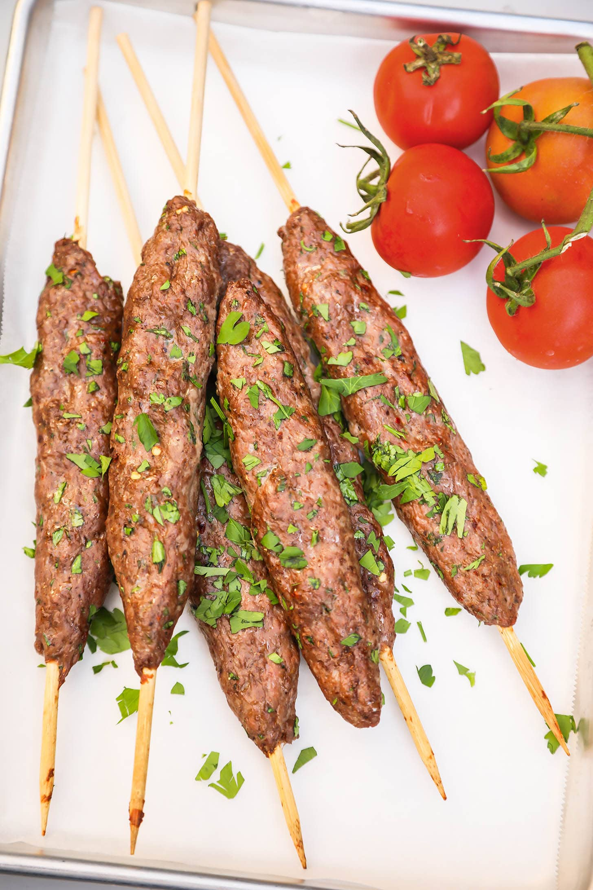

Kafta

These Lebanese minced-meat skewers are like the ultimate handmade sausages
and they’re incredibly simple. Make sure you buy the best-quality minced
lamb and beef, or even better, mince the meat yourself. If you don’t have
metal skewers you can simply shape the mixture into patties. Great on the
barbie, great in a pan, great in the oven, these are just great!
Kofta or Köfte is a family of meatball or meatloaf dishes found in
South Asian, South Caucasian, Middle Eastern, Balkan, and Central Asian
cuisines. In the simplest form, koftas consist of balls of ground meat
usually beef, chicken, lamb or mutton, or a mixture – mixed with spices
and sometimes other ingredients. The earliest known recipes are found in
early Arab cookbooks and call for ground lamb.
There are many national and regional variations. There are also vegetable
and uncooked versions. Shapes vary and include balls, patties, and
cylinders. Sizes typically vary from that of a golf ball to that of an
orange.
Ingredients
- 1 cup finely chopped flat-leaf parsley
- 500 g minced lamb
- 500 g minced beef
- 1 large onion, very finely chopped
- 1 tsp salt
- ½ tsp freshly ground white pepper
- flatbread, to serve
- tabbouleh, to serve
Steps
-
Place all the ingredients in a large bowl and use your hands to combine
and knead the mixture until smooth
-
Dampen your hands with water and shape the mixture around metal skewers.
Barbecue until golden brown and cooked through.
-
To serve, split open some flatbread and fill with tabbouleh. Top with a
kafta, close the bread around it and hold firmly as you slide out the
skewer. Use torn-off pieces of bread to pick up some of the kafta and
tabbouleh.